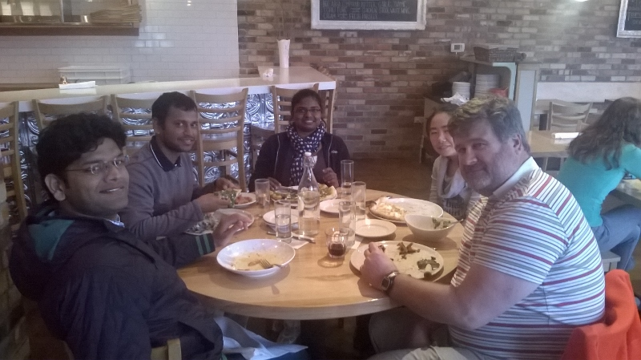

India to US: March 2015
Researchers visiting:
- Prof. Amaresh Chakrabarti, Indian Institute of Science(IISc) , Bengaluru
- Gulshan Vashishtha, National Innovation Foundation, Ahmedabad
- Suman Devadula, Ph.D. Student, IISc, Bengaluru
- Saritha Sudharmma Vishwanathan, Ph.D. Student, Indian Institute of Management, Ahmedabad
- Kiran Ghadghe, Ph.D. Student, IISc, Bengaluru
Visit and acitivities
NIST visit - 1st to 8th March
Monday, 2nd March: Arrival at NIST building 220; Meet and greet with Division Chief - Vijay Srinivasan followed by meetings with different program managers including (KC morris). Afternoon sessions included discussions regarding the center and planned activities.
Tuesday, 3rd March: Division wide presentations from visitors: Prof. Amaresh Chakrabarti, Gulshan and Suman followed by discussions with program managers Kevin Lyons and Paul Witherell. Visit to the NIST nano-fab.
Wednesday, 4th March: Visit to George Mason University hosted by Prof. Alexander Brodsky. Discussions and Presentations with various faculty members.
Thursday, 5th March: (Snowy weather restricted travel) Webex meetings with faculty from George Washington University hosted by Prof. Sanjay Jain. Presentations before lunch included "GW Solar Institute" by Amit Ronen, "Direct, indirect and multiplier effects of sustainability efforts extended enterprise" by Dr. Jennifer Griffin. Post lunch presentations included "Economic payback analysis of sustainable energy strategy" by Dr. Peter LaPuma, "Sustainable Supply Chains" by Dr. John Forrer from Institute for Corporate Responsibility followed by "Decision-analytic sustainability measurement in infrastructure systems" by Dr. Royce Francis and "GW Energy & Environment Management Institute" by Joe Cascio.
Friday, 6th March: Snow day cancellations of meetings with faculty from Universtiy of Maryland hosted by Prof. S. K. Gupta.
UCal-Berkeley visit - 8th to 15th March
Monday, 9th March: Arrival at LMAS lab Berkeley; Meeting with Jeremy Faludi and other lab members. Discussion on metrics, tools, teaching methods and case studies (Efficient Refrigerators, Zero energy refrigerator, warming spaces vs warming floors, energy saving through behavior).
Tuesday, 10th March: Meeting and presentation with Jeffrey Greenblatt on energy and cost effective pathway for artificial photosynthesis.
Wednesday, 11th March: Attended seminar given by Joseph Kantebacher on linking happiness and sustainability.
Also met and discussed with members of LMAS laboratory. The members were
- Raunak Binge - simulating machining processes followed by data analysis for energy consumption.
- Rebecca - energy prediction in industrial processes
- Rudolfo - modelling energy consumption in machining processes
- Prof. Lima - Sustainable Manufacturing processes
- Rachel - Social and environmental impacts of engineering systems and methodological issues in LCA
- Damaris - Mapping sustainability with gaming
- Jennifer - Material selection for sustainable manufacturing supply chain; collaborating with google on greenscreen project
- Anna - environmental performance of manufacturing facilities
- Phillppe - artificial photosynthesis
- Max - Hybrid machining and additive manufacturing
- Kim - Sustainable Manufacturing
Thursday, 12th March: Attended lecture given by Prof. Sashi Buluswar on Transformative technology in agriculture and livestock.
Friday, 13th March: Visited Stanford product realization lab and D-School. Met with Prof. Craig Milroy and Banny Banerjee and looked at different design activities at these places.
WSU visit - 15th to 22nd March
Monday, 16th March: Arrival at WSU; Meeting with Yang Hu followed by presentations on complete and selective disassembly time prediction followed by discussions
Tuesday, 17th March: Meeting Prof. Chuck Pezeshki followed by discussion on design education, innovation and sustainability. Discussed sustainability of systems ideas that combine conway's law and spiral dynamics.

Wednesday, 18th March: Demo of state of the art VR system at IES - WSU Research and Technology Park by Prof. Uma, Prof. Shankar Jayaram and team members. Demo of VR for Ricky Martin and Marc Anthony's concert.

Thursday, 19th March: Discussions and presentations with Prof. Gaurav Ameta (via Skype), on (a) energy estimation framework (b) uncertainty in LCA and (c) case studies. Some of case studies include
- LCA and related uncertainty of a Remote Control
- LCA comparison of two toasters
- LCA comparison of two blenders
- LCA of a rice cooker
- LCA of a baseball ball
- LCA of a cooling system in a small shop
- Environmental Impact of different building materials
- Sustainable design of Hoop crop structure
- Sustainable design for fertilizer spraying and potato harvesting
Friday, 20th March: Presentation by Quinn Langfitt on LCA followed by discussions related to LCA of oil filters in ferries. He is further investigating normalization methods in LCA.
Syracuse visit - 22th to 28th March
Monday, 23rd March: Meeting with Alex Johnson, Ph.D. student, working on analyzing trace metals in storm water. Had lunch with Prof. Young Moon followed by product design presentations based on design for sustainability matrix.
Tuesday, 24th March: Visited a working green roof at the convention center with Mallory, Ph.D. student. Also had discussions with Carli, Ph.D. student, working on understanding the adoption and diffusion of green infrastructure for stormwater management.
Wednesday, 25th March: Met and discussed research work of several graduate and undergraduate students working with Prof. Cliff Davidson, including Yige Yang, Jamie, Zhuyu, Jeff and Diona. Later met with Prof. Utpal Roy's research group, working on smart manufacturing.
Thursday, 26th March: Had discussions with Prof Sommerfield's and Prof. Ted Enderny's research groups at SUNY.
Friday, 27th March: Toured the Center of Excellence and met Profs. Shobha Bhatia, Fred Carranti, Allison Wetherbee, Brian Rowland, Cliff Davidson and Sudipta Ghorai.